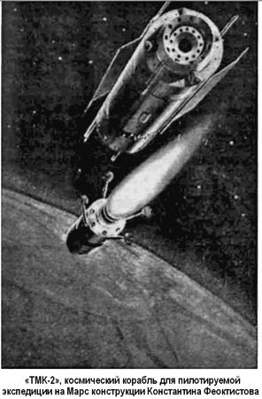
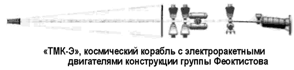

«ТМК» и «ТМК-Э» Константина Феоктистова
Вторую группу бригады Тихонравова, разрабатывавшую вариант пилотируемой экспедиции с высадкой на поверхность Марса, возглавил Константин Феоктистов.
Проект Феоктистова поначалу основывался на сложной многопусковой схеме со сборкой «ТМК» на орбите ИСЗ и последующим разгоном корабля к Марсу. В него должны были войти пять модулей: кабина космического корабля, аппарат для полета в марсианской атмосфере, два модуля для высадки на поверхность планеты (один основной, а второй запасной на случай, если первый при посадке получит повреждения), ядерный реактор в защитном кожухе. После выхода на орбиту вокруг Марса предполагалось исследовать атмосферу планеты с помощью атмосферного аппарата, а на поверхность планеты доставить два посадочных модуля с тремя членами экипажа. Трое других должны были дожидаться их возвращения на орбите. После завершения программы исследований корабль с космонавтами стартовал к Земле.
Проектанты, имеющие опыт создания пилотируемых кораблей, вскоре поняли, что уложиться в жесткие рамки стартовой массы вряд ли возможно. Стремясь получить резерв массы, они обратили внимание на электроракетные двигатели (ЭРД), отличающиеся высокой экономичностью и дающие реальную возможность либо снизить стартовую массу на орбите ИСЗ, либо увеличить полетную массу «ТМК».
Предварительные проработки кораблей с ЭРД, сделанные в «двигательном» отделе ОКБ-1 под руководством одного из заместителей Королева — Михаила Мельникова, подтвержденные результатами независимых исследовании НИИ-88, показали перспективность таких двигателей.
Благодаря применению электроракетных двигателей группе Феоктистова удалось разработать проект «ТМК-Э» со стартовой массой около 75 тонн, что позволяло надеяться на его выведение за один пуск тяжелой ракеты-носителя. При этом масса корабля на траектории полета к Марсу составляла 30 тонн.
К сожалению, крупным недостатком проекта было то, что из-за чрезвычайно малой тяги ЭРД (всего 7,5 килограмма) разгон корабля должен был производиться по раскручивающейся спирали в течение нескольких месяцев.
Еще одной серьезной проблемой, препятствующей широкому использованию ЭРД, является то, что для их функционирования необходимо наличие на борту космического аппарата очень мощного источника электроэнергии. Например, для «ТМК-Э» требовались огромные панели солнечных батарей площадью около 36 000 м2. Конечно же, о столь крупногабаритной конструкции тогда не могло быть и речи.
Для электропитания ЭРД марсианского корабля предполагалось использовать компактный ядерный реактор с безмашинным способом преобразования тепловой энергии (с помощью термоионных устройств или полупроводниковых термопар).
Этот вариант «ТМК-Э» включал: ядерный реактор мощностью 7 МВт; ЭРД со скоростью истечения 100 000 м/с; удлиненный конический бак с рабочим телом для двигательной установки, и огромный радиатор-испаритель в форме длинного цилиндра.
Для защиты экипажа и систем от рентгеновского излучения при работе ядерного реактора служил теневой радиационный экран, расположенный непосредственно за реактором, а для защиты жилых помещений «ТМК-Э» от инфракрасного излучения радиатора — тепловой экран. За ним помещалось радиационное убежище с биозащитой. Другие блоки «ТМК-Э» включали рабочий и жилой отсеки со спускаемым аппаратом.


Габариты «ТМК-Э»: полная длина — 175 метров, максимальный диаметр — 6 метров, полная масса — 150 тонн.
Корабль собирался на околоземной орбите из отдельных модулей, выводимых тяжелой ракетой-носителем, и затем стартовал в сторону Марса с экипажем из шести человек, трое из которых вместе с оборудованием совершали посадку на поверхность красной планеты.
Для осуществления высадки «ТМК-Э» нес целый исследовательский комплекс из пяти отделяемых аппаратов сегментально-конической формы. После посадки исследовательский комплекс формировался в «марсианский поезд» на крупногабаритных колесных шасси, подобный «лунному поезду», разработанному в бюро Владимира Бармина. «Марсианский поезд» состоял из пяти платформ: платформы с кабиной экипажа, манипулятором и буровой установкой, платформы с конвертопланом для разведочных полетов над красной планетой, двух платформ с ракетами (одна запасная) для возвращения экипажа с поверхности Марса на корабль, находящийся на околомарсианской орбите, и платформы с силовой ядерной энергоустановкой.
В течение одного года поезд должен был пройти по поверхности Марса от южного полюса до северного, провести исследования его поверхности и атмосферы и передать информацию на корабль, обращающийся по околомарсианской орбите, откуда она ретранслировалась на Землю.
После окончания работ на поверхности Марса экипаж с образцами грунта и другими результатами исследований возвращался на корабль, находящийся на околомарсианской орбите, а затем стартовал к Земле.
Учитывая большую продолжительность экспедиции (три года), конструкторы уделили особое внимание системе жизнеобеспечения экипажа. Созданные к тому времени системы, основанные на запасе кислорода, воды и продуктов без их возобновления, не позволяли реализовать программу из-за недопустимо большой массы этих запасов. Поэтому нужны были новые СЖО с так называемым замкнутым циклом. Проектанты уповали прежде всего на биологические системы, повторяющие замкнутую экологическую систему Земли в упрощенном виде. Для регенерации кислорода из выдыхаемого космонавтами углекислого газа должны были применяться контейнеры с водорослями хлорелла. Для пополнения рациона в бортовой гидропонной оранжерее корабля предполагалось выращивать овощи, что позволило бы снизить массу продуктов на величину от 20 до 50 %. Так как оранжерея составляла неотъемлемую часть всех проектов тяжелых межпланетных кораблей, серьезной проблемой стал подвод света к растениям. Эта задача была решена применением крупногабаритных наружных солнечных концентратов.
Для отработки прототипа замкнутой СЖО ОКБ-1 в содружестве с Институтом медико-биологических проблем и заводом «Звезда», разрабатывавшим катапультные системы для самолетов, скафандры и системы жизнеобеспечения, построило аналог жилого отсека «ТМК» — наземный экспериментальный комплекс, в котором три испытателя провели целый год.
Однако в середине 60-х почти все силы ОКБ-1 были брошены на реализацию приоритетной программы высадки на Луну «Н1-ЛЗ», что стало сильно тормозить разработку «ТМК-Э».